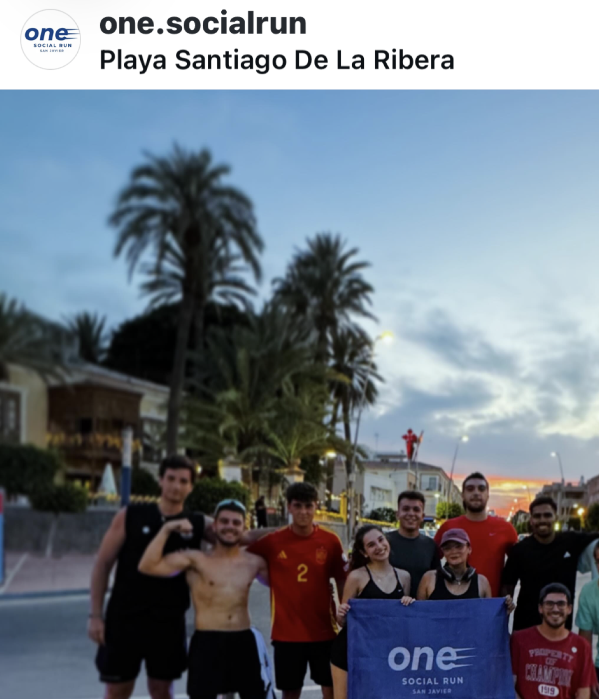

QUEDADA ABIERTAJueves
Jueves
13 agosto
HORA21:00
DISTANCIA5 km
PUNTO DE SALIDAMolino Quintín
RITMOTranquilo
JMAL+8
10 personas ya se apuntanQuedadas para correr, conocer gente y disfrutar. Aquí no importa tu marca, importa que vengas.
Una vuelta tranquila junto al Mar Menor. Ven solo o acompañado; el grupo hace el resto.
One Social Run nació para convertir una salida a correr en el mejor momento de la semana.
Nadie se queda atrás. Agrupamos, esperamos y terminamos juntos.
Vienes por correr y vuelves por la gente.
Mar, molinos y atardeceres del Mar Menor.
Momentos reales de la comunidad. Súmate a la próxima foto.

No. El ritmo es tranquilo y adaptado al grupo. Lo importante es salir y terminar juntos.
No es obligatorio, pero apuntarte nos ayuda a saber cuántas personas vendrán.
No. Las quedadas de One Social Run son abiertas y gratuitas.
Ropa cómoda, zapatillas, agua y ganas de conocer gente. En verano recomendamos llegar bien hidratado.
Escríbenos antes por Instagram. Te orientaremos para que puedas disfrutar del plan con seguridad.
Apúntate, compártela con alguien y nos vemos en el punto de salida.
El camino que ya hemos compartido.